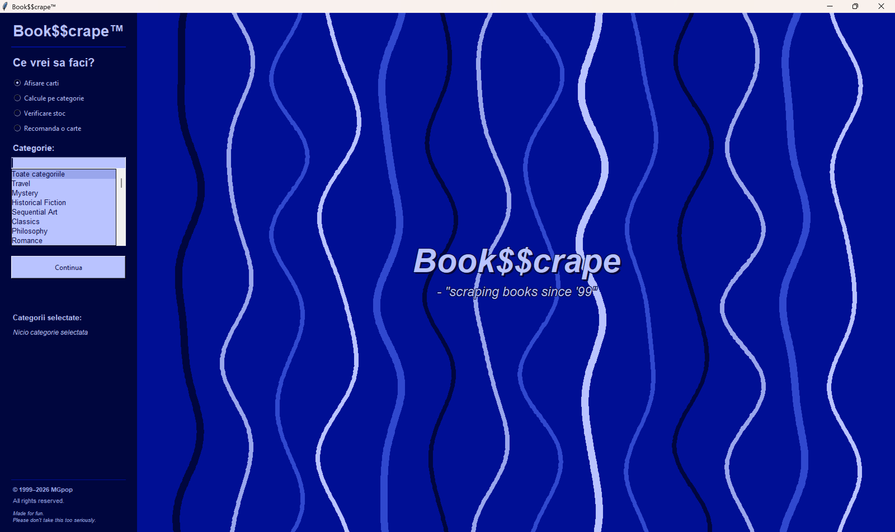
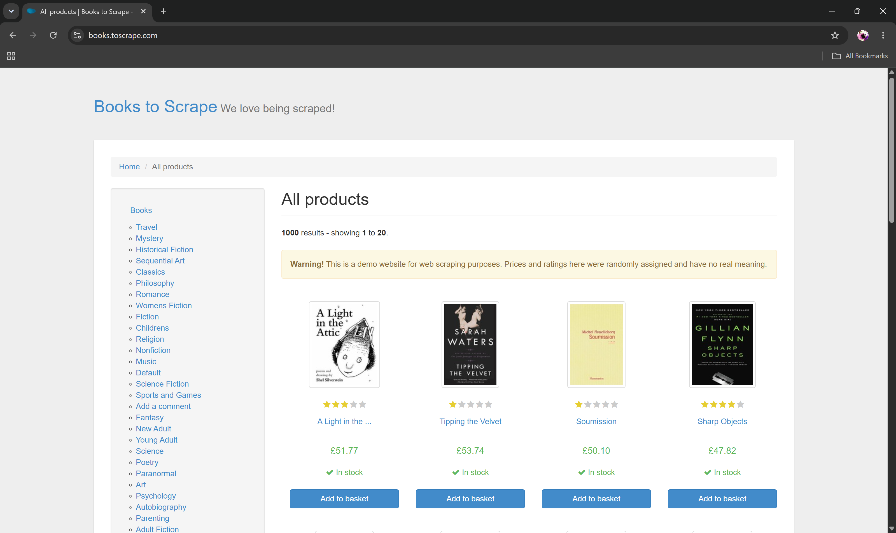
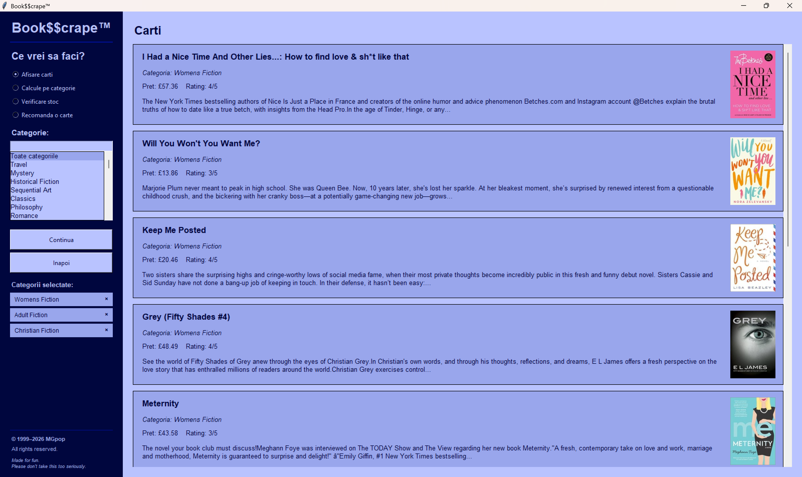
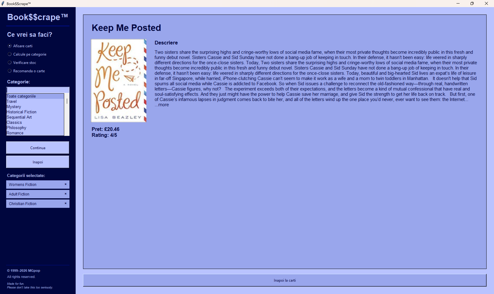
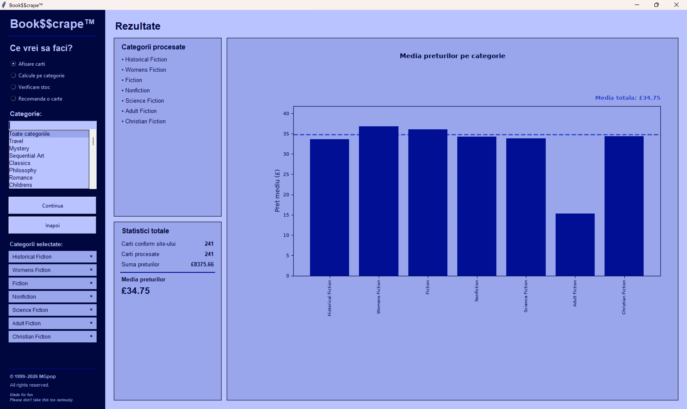
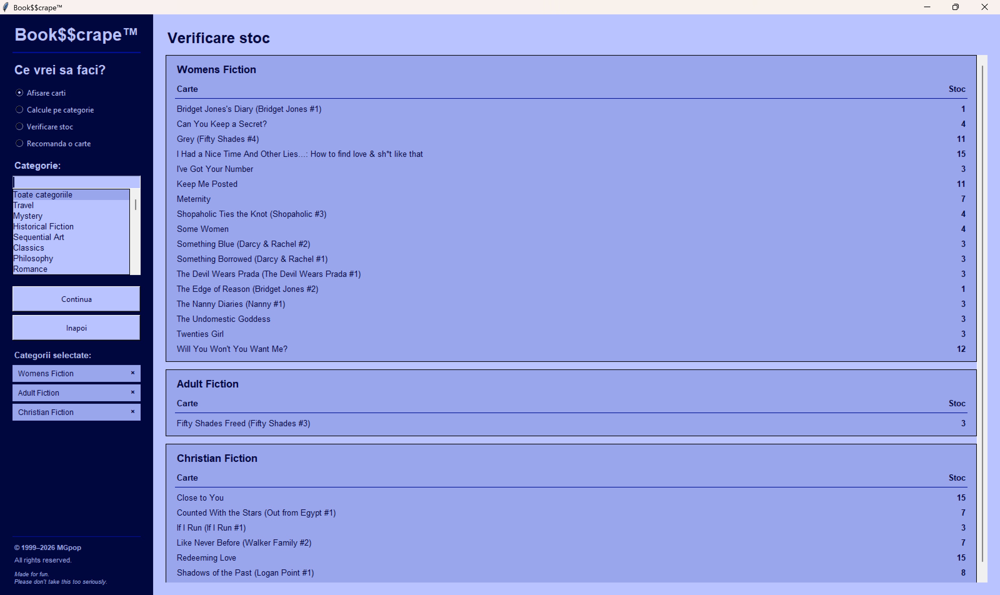
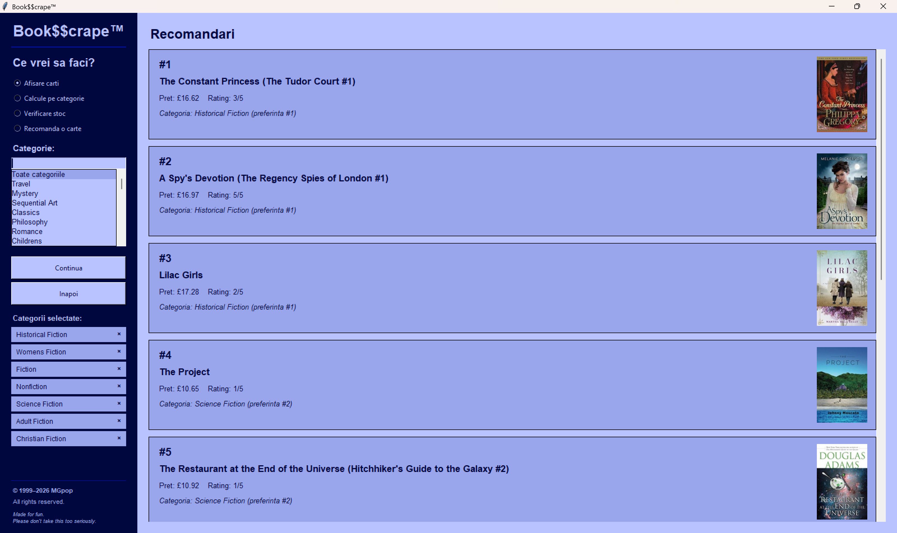

Despre Book$$crape
Book$$crape este o mică aplicație desktop creată pentru explorarea datelor despre cărți prin web scraping. Combină o interfață cu aspect retro cu funcții practice pentru afișarea cărților, efectuarea calculelor, verificarea stocului și obținerea recomandărilor.
~ "Scraping books since '99."

De unde provin cărțile?
Book$$crape folosește ca sursă de date site-ul demonstrativ Books to Scrape . Site-ul nu aparține MGpop sau Book$$crape.

Afișarea cărților
Explorează cărțile din categoriile selectate, apoi deschide pagina unei cărți pentru a vedea prețul, evaluarea, descrierea și celelalte detalii disponibile.


Calcule pe categorii
Procesează una sau mai multe categorii și compară statistici despre prețuri, inclusiv sumele totale și prețurile medii, însoțite de o reprezentare grafică a rezultatelor.

Verificarea stocului
Verifică informațiile despre disponibilitatea cărților din categoriile selectate, așa cum sunt prezentate pe site-ul sursă.

Recomandă-mi o carte
Cere-i aplicației Book$$crape o recomandare și las-o să aleagă o carte dintre datele colectate.

Cerințe de sistem
- Windows
- Google Chrome
- Conexiune la internet
Python, Selenium și celelalte dependențe Python nu trebuie instalate separat.
Versiunea actuală
Book$$crape™ v1.0
Descarcă arhiva ZIP, extrage fișierele și pornește aplicația pentru Windows.
Te interesează codul sursă? Vizitează repository-ul Book$$crape de pe GitHub. Codul sursă este disponibil sub licența Apache 2.0.